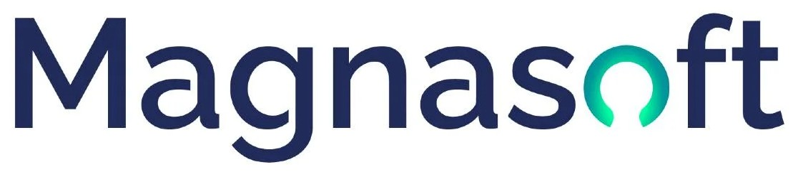
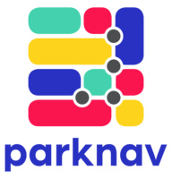
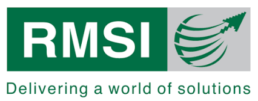
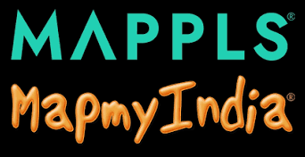
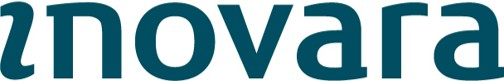
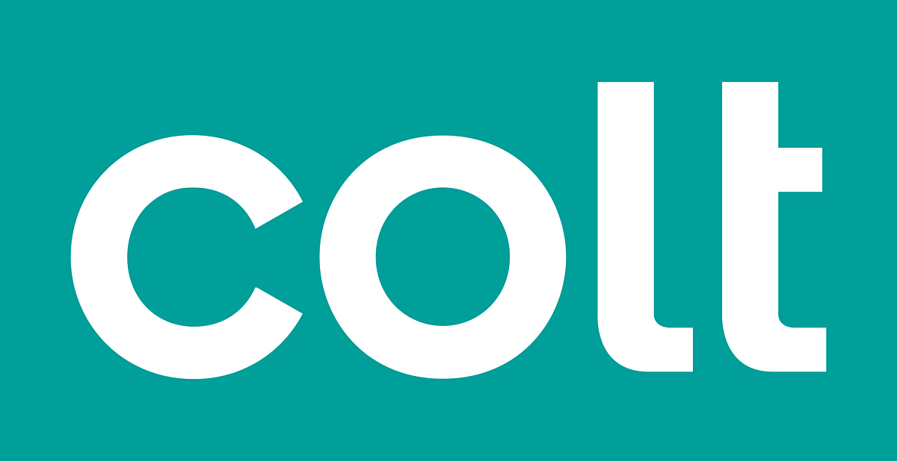
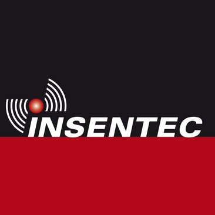
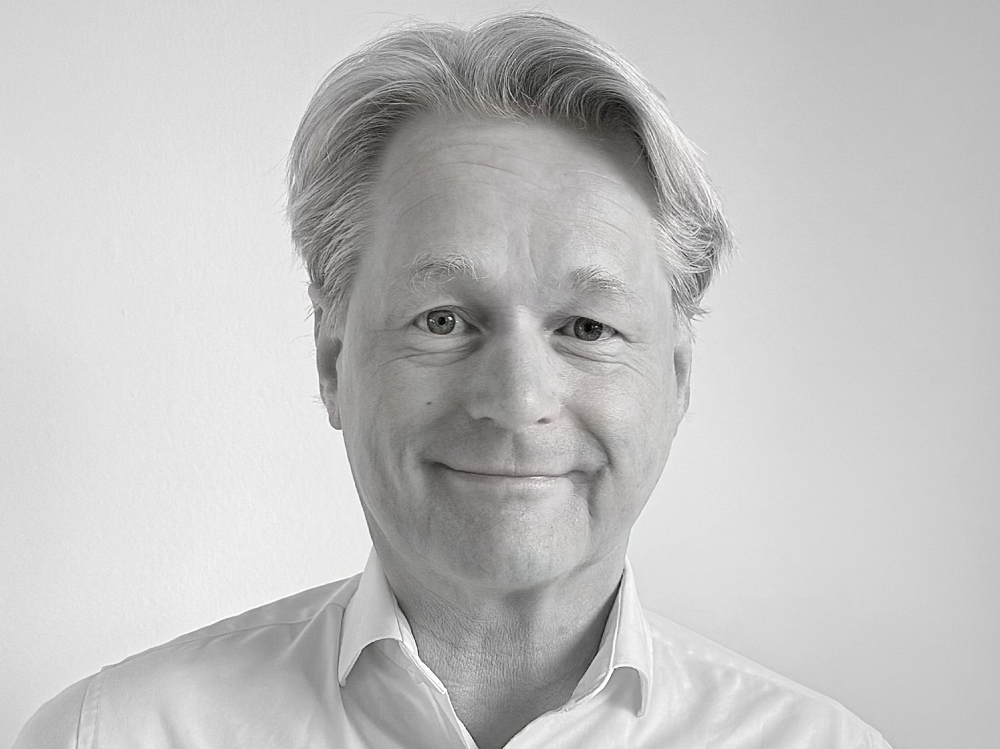

Venture Management
Deltilo is active on the cutting edge between business and technology. We are convinced that excellence in business planning, management and funding is key to a commercially successful implementation of technology. We are happy to help you with any one of these three components.
Deltilo's services portfolio includes business and technology planning, market research, valuation, financial analysis, due diligence, product- and program management.
Deltilo provides, recruits or empowers management to achieve a successful synergy between business and technology, whether interim or long term.
Deltilo can structure the funds required for further business or technology development, for example through governmental subsidies, loans, venture capital or crowdfunding.
A selection of companies for which Deltilo has provided advisory services, interim management, and capital.

Acting Vice-President Europe
Responsible for all existing and new European business. Set up a European office in The Hague, The Netherlands.
Magnasoft is a global specialist in Geographic Information Systems (GIS), 3D mapping, Digital Twins, spatial data analytics, and CAD engineering. The company helps organizations across telecom, utilities, and government sectors digitally map and manage their physical assets.

Acting Senior Vice-President Corporate Development
Supported attracting new series of funding.
Ai Incube is an advanced AI-powered platform for smart parking navigation and street-level data. By leveraging machine learning and predictive algorithms, the company provides real-time insights into street and garage parking availability across more than 1,000 cities.

Acting Managing Director Europe
Responsible for all existing and new European business.
RMSI is a global leader in geospatial intelligence, Geo-AI, digital twins, and geospatial software development. They serve leading global tech enterprises, governments, telecom operators, and utility providers worldwide.

Consulting on market strategy for European market entry
CE Info Systems is a publicly traded Indian technology leader (NSE: MAPMYINDIA) and the premier provider of digital maps, B2B/B2C navigation platforms (Mappls), and location-based IoT technologies in India.
Co-founder and director
Rotterdam Management Group (RMG) owns and manages various high-tech companies.

Co-founder, shareholder and director
Atlantic Telecom was a publicly listed British telecommunications operator that rolled out extensive fiber and DSL networks across Europe around the turn of the century. Inovara B.V. acted as its Dutch operating entity, delivering broadband and data services to the enterprise market via unbundled local loop access (MDF-access).

Advisor to the board, acquisition of the fiber network of Telecom Noord West N.V.
Colt is a major international telecommunications and digital infrastructure provider serving enterprise customers worldwide. Colt acquired the local fiber optic network from Amsterdam energy provider Energie Noord-West (Telecom Noord-West) to build one of the earliest high-capacity private fiber networks in Amsterdam.

Advisor to the board, attracting funding from Holland Ventures
Insentec (part of the Hokofarm Group) is a Dutch pioneer and manufacturer of automated livestock farming solutions. They are globally recognized for smart feeding systems, milking robots, sensors, and animal identification systems for dairy and cattle farming.
Deltilo is founded and managed by Hugo van der Linde, a seasoned entrepreneur and executive in the technology sector. Already in 1998 Hugo launched RMG Venture Management from where he founded, financed and managed several technology companies. For example, Hugo co-founded, financed and directed the third largest business DSL broadband internet company in the Netherlands.
Also, Hugo was CEO of the platform on which over 95% of all travel agencies in the Netherlands make all their bookings. After migrating it to a cloud-based service and making increasing profits, the company was sold to TUI, one of the largest travel companies in the world.
Thereafter Hugo became CEO of AND, a public company listed at the Euronext Stock exchange. Transforming the company to a state-of-the-art technology provider, AND was engaged in providing location technologies to Fortune 500 tech companies worldwide. During his eight years leadership AND's share price increased by more than 150% and during two separate years AND won the Euronext Best Performer award.
Alongside his business career, Hugo is strongly committed to creating opportunities for people with a distance to the labour market. He actively supports initiatives that help bridge the gap to sustainable paid employment, believing that business success and social impact go hand in hand.
Hugo holds a Master degree in Science (MSc) from the Technical University in Delft and a Master degree in Business Administration (MBA) from the RSM Erasmus University in Rotterdam.
Deltilo is flexibly supported by an extensive network of legal, financial, managerial and technology experts, but is equally happy to team up with existing professionals.
